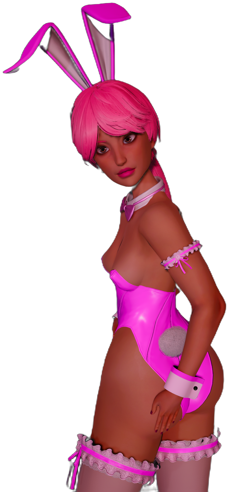

<!DOCTYPE html>
<html>
<head>
<meta charset="utf-8">
<style>
  :root {
    --bg: #0a0d18; --panel: #111827; --border: rgba(255,255,255,.10);
    --text: #e8ecf8; --muted: #8b95b5; --cyan: #22d3ee; --pink: #f472b6; --neon: #6ee7b7; --blue: #2b3bff;
  }
  * { box-sizing: border-box; margin: 0; padding: 0; }
  body { background: transparent; font-family: 'Inter', 'Inter Display', sans-serif; }
  .stage { position: relative; overflow: hidden; background: var(--bg); }

  /* background: faint grid, a cyan glow on the left, a pink one behind her (same as Studio Browser) */
  .grid { position: absolute; inset: 0;
    background-image: linear-gradient(rgba(255,255,255,.035) 1px, transparent 1px), linear-gradient(90deg, rgba(255,255,255,.035) 1px, transparent 1px);
    background-size: 40px 40px; mask-image: linear-gradient(90deg, rgba(0,0,0,.9), rgba(0,0,0,.25)); }
  .glow { position: absolute; border-radius: 50%; filter: blur(60px); }
  .glow.c { background: rgba(34,211,238,.20); }
  .glow.p { background: rgba(244,114,182,.38); }

  /* wordmark: gradient word + neon plate, like STUDIO BROWSER */
  .brand { position: absolute; display: flex; flex-direction: column; z-index: 5; }
  .wordmark { display: flex; align-items: center; gap: 18px; }
  .camera { font-family: 'Poppins', sans-serif; font-weight: 800; letter-spacing: -1px; line-height: 1;
    background: linear-gradient(90deg, var(--cyan), #a78bfa 55%, var(--pink)); -webkit-background-clip: text; color: transparent; }
  .plate { display: flex; align-items: center; border: 2px solid var(--neon); border-radius: 14px;
    background: rgba(110,231,183,.08); box-shadow: 0 0 22px rgba(110,231,183,.35), inset 0 0 18px rgba(110,231,183,.12); }
  .routes { font-family: 'Poppins', sans-serif; font-weight: 700; color: var(--neon); letter-spacing: 1px; line-height: 1;
    text-shadow: 0 0 14px rgba(110,231,183,.55); }
  .underline { height: 4px; border-radius: 2px; margin-top: 16px; background: linear-gradient(90deg, var(--cyan), var(--pink)); }
  .tagline { color: var(--text); margin-top: 16px; line-height: 1.35; }
  .tagline b { color: #fff; font-weight: 700; }
  .chips { display: flex; flex-wrap: wrap; gap: 8px; margin-top: 18px; }
  .chip { font-size: 15px; font-weight: 600; color: var(--text); padding: 6px 13px; border-radius: 999px;
    border: 1px solid var(--border); background: rgba(255,255,255,.04); }
  .chip.on { color: #0a0d18; background: var(--neon); border-color: var(--neon); }
  .chip.pk { color: #ffd6ea; border-color: rgba(244,114,182,.6); background: rgba(244,114,182,.12); }
  .by { font-size: 13px; letter-spacing: 2.5px; color: var(--muted); font-weight: 600; z-index: 5; }
  .by b { color: var(--text); }

  /* the bunny, with the spiral path drawn half behind her and half in front */
  .scene { position: absolute; }
  .scene svg { position: absolute; left: 0; top: 0; overflow: visible; }
  .girl { position: absolute; filter: drop-shadow(0 0 28px rgba(244,114,182,.45)); }
  .girl img { display: block; width: 100%; -webkit-mask-image: linear-gradient(to bottom, #000 82%, transparent 100%); mask-image: linear-gradient(to bottom, #000 82%, transparent 100%); }

  /* a slice of the Camera Routes window, drawn in the plugin's own theme */
  .win { position: absolute; z-index: 4; border-radius: 12px; border: 1.5px solid rgba(110,231,183,.75); background: #0F1115;
    box-shadow: 0 0 0 1px rgba(0,0,0,.6), 0 18px 60px rgba(0,0,0,.65), 0 0 40px rgba(110,231,183,.18);
    transform: perspective(1400px) rotateY(-12deg) rotateZ(1.5deg); transform-origin: left center; padding: 12px 14px 14px; color: #E6E8EE; }
  .win::after { content: ''; position: absolute; inset: 0; border-radius: 12px; background: linear-gradient(115deg, rgba(255,255,255,.08), transparent 35%); pointer-events: none; }
  .win .t { color: #58A6FF; font-weight: 700; font-size: 13px; margin-bottom: 8px; }
  .win .sec { border: 1px solid #262A33; background: #171A21; border-radius: 6px; padding: 5px 8px; font-size: 11.5px; color: #58A6FF; font-weight: 700; margin: 8px 0 6px; }
  .win .sec span { color: #8B91A1; font-weight: 500; margin-left: 8px; }
  .win .row { display: flex; gap: 4px; margin-top: 4px; }
  .win .b { flex: 1; text-align: center; font-size: 11px; padding: 5px 0; border-radius: 5px; border: 1px solid #262A33; background: #171A21; color: #E6E8EE; }
  .win .b.on { border-color: #6EE7B7; background: #1F3A36; color: #6EE7B7; }
  .win .b.go { border-color: #6EE7B7; background: #6EE7B7; color: #0F1115; font-weight: 700; }
  .win .scrub { display: flex; align-items: center; gap: 8px; font-size: 11px; margin-top: 8px; color: #E6E8EE; }
  .win .track { flex: 1; height: 4px; border-radius: 2px; background: #3A3F4A; position: relative; }
  .win .track i { position: absolute; top: -4px; width: 12px; height: 12px; border-radius: 50%; background: #6EE7B7; box-shadow: 0 0 8px rgba(110,231,183,.7); }
  .win .hint { font-size: 10.5px; color: #8B91A1; margin-top: 6px; }

  /* README banner, 1600 x 400 */
  .banner { width: 1600px; height: 400px; }
  .banner .glow.c { width: 520px; height: 300px; left: -120px; top: -80px; }
  .banner .glow.p { width: 460px; height: 440px; right: 0px; top: 0px; }
  .banner .brand { left: 64px; top: 48px; width: 680px; }
  .banner .camera { font-size: 80px; }
  .banner .plate { height: 76px; padding: 0 20px; }
  .banner .routes { font-size: 54px; }
  .banner .underline { width: 360px; }
  .banner .tagline { font-size: 21px; }
  .banner .by { position: absolute; left: 64px; bottom: 26px; }
  .banner .scene { left: 1150px; top: 0; width: 450px; height: 400px; }
  .banner .girl { width: 200px; left: 139px; top: 0px; }
  .banner .win { width: 300px; left: 800px; top: 74px; }

  /* Social preview, 1280 x 640 */
  .social { width: 1280px; height: 640px; }
  .social .glow.c { width: 560px; height: 380px; left: -140px; top: -100px; }
  .social .glow.p { width: 600px; height: 640px; right: -60px; top: 20px; }
  .social .brand { left: 64px; top: 62px; width: 720px; }
  .social .camera { font-size: 100px; }
  .social .plate { height: 96px; padding: 0 24px; }
  .social .routes { font-size: 70px; }
  .social .underline { width: 440px; }
  .social .tagline { font-size: 25px; max-width: 640px; }
  .social .chips { max-width: 640px; }
  .social .by { position: absolute; left: 64px; bottom: 34px; }
  .social .scene { left: 760px; top: 0; width: 520px; height: 640px; }
  .social .girl { width: 303px; left: 125px; top: 10px; }
  .social .win { width: 290px; left: 470px; top: 388px; transform: perspective(1400px) rotateY(-10deg) rotateZ(-2deg); }

  /* Discord, 1200 x 800 (3:2) */
  .discord { width: 1200px; height: 800px; }
  .discord .glow.c { width: 600px; height: 420px; left: -160px; top: -120px; }
  .discord .glow.p { width: 640px; height: 760px; right: -80px; top: 40px; }
  .discord .brand { left: 60px; top: 64px; width: 640px; }
  .discord .camera { font-size: 92px; }
  .discord .plate { height: 88px; padding: 0 22px; }
  .discord .routes { font-size: 64px; }
  .discord .underline { width: 400px; }
  .discord .tagline { font-size: 24px; max-width: 600px; }
  .discord .chips { max-width: 600px; }
  .discord .by { position: absolute; left: 60px; bottom: 38px; }
  .discord .scene { left: 680px; top: 0; width: 520px; height: 800px; }
  .discord .girl { width: 360px; left: 99px; top: 20px; }
  .discord .win { width: 340px; left: 60px; top: 478px; transform: perspective(1400px) rotateY(10deg) rotateZ(-1.5deg); }
</style>
</head>
<body>
<div id="root"></div>
<script>
const layout = new URLSearchParams(location.search).get('layout') || 'banner';
const chips = `
  <div class="chips">
    <div class="chip on">20 camera moves</div><div class="chip">Tracks a character</div><div class="chip">Easing curves</div>
    <div class="chip">Scrub &amp; reframe</div><div class="chip pk">Record via VideoExport</div>
  </div>`;
const brand = (tag) => `
  <div class="brand">
    <div class="wordmark"><div class="camera">CAMERA</div><div class="plate"><div class="routes">ROUTES</div></div></div>
    <div class="underline"></div>
    <div class="tagline">${tag}</div>
    ${chips}
  </div>`;
const by = `<div class="by">HONEY SELECT 2 STUDIO PLUGINS · <b>ALBATROSS LABS</b></div>`;
const win = `
  <div class="win">
    <div class="t">Camera Routes</div>
    <div class="row"><div class="b">Push</div><div class="b">Trolley</div><div class="b">Arc</div><div class="b">Orbit</div><div class="b on">Spiral</div></div>
    <div class="row"><div class="b go">Up</div><div class="b">Down</div></div>
    <div class="scrub">Scrub <div class="track"><i style="left:58%"></i></div> 2.3 / 4.0 s</div>
    <div class="sec">Track subject <span>Bunny · head</span></div>
    <div class="hint">Follows the character's head as it moves.</div>
  </div>`;

// ---- the spiral: one turn around her while rising, in perspective (an ellipse that climbs) ----
function spiral(w, h, girlCx, y0, y1, rx, ry, turns, theta0, head, camT, markSize) {
  const N = 240, pts = [];
  for (let i = 0; i <= N; i++) {
    const t = i / N, th = theta0 + turns * 2 * Math.PI * t;
    pts.push({ t, th, x: girlCx + rx * Math.sin(th), y: y0 - (y0 - y1) * t + ry * Math.cos(th), front: Math.cos(th) > 0 });
  }
  // split into runs of front / back so the back half can sit behind her
  const runs = []; let cur = null;
  for (const p of pts) {
    if (!cur || cur.front !== p.front) { if (cur) cur.pts.push(p); cur = { front: p.front, pts: [] }; runs.push(cur); }
    cur.pts.push(p);
  }
  const path = r => 'M' + r.pts.map(p => p.x.toFixed(1) + ' ' + p.y.toFixed(1)).join(' L');
  const back = runs.filter(r => !r.front).map(r => `<path d="${path(r)}" fill="none" stroke="#3aa6d8" stroke-opacity=".55" stroke-width="5" stroke-linecap="round" stroke-dasharray="1 11"/>`).join('');
  const frontGlow = runs.filter(r => r.front).map(r => `<path d="${path(r)}" fill="none" stroke="#6ee7b7" stroke-opacity=".35" stroke-width="12" stroke-linecap="round" filter="url(#blur)"/>`).join('');
  const front = runs.filter(r => r.front).map(r => `<path d="${path(r)}" fill="none" stroke="#6ee7b7" stroke-width="5" stroke-linecap="round" stroke-dasharray="1 11"/>`).join('');

  // Studio's route markers: blue triangles, "S" then numbers, every 1/8 of the turn
  const marker = (p, label, size) => {
    const s = size, x = p.x, y = p.y - 6;
    return `<g opacity="${p.front ? 1 : .55}"><path d="M${x - s * .62} ${y - s * 1.25} L${x + s * .62} ${y - s * 1.25} L${x} ${y} Z" fill="#1a22e6" stroke="#5b6bff" stroke-width="1.5"/>
      <text x="${x}" y="${y - s * .72}" fill="#fff" font-family="Inter" font-weight="800" font-size="${s * .62}" text-anchor="middle">${label}</text></g>`;
  };
  // a point every quarter turn; the one the camera sits on is left to the camera
  const steps = Math.round(turns * 4), idx = k => Math.round(k / steps * N);
  const backMarks = [], frontMarks = []; let shown = 0;
  for (let k = 0; k <= steps; k++) {
    const p = pts[idx(k)];
    if (Math.abs(k / steps - camT) < 0.04 || (!p.front && Math.abs(Math.sin(p.th)) < 0.3)) continue; // under the camera, or hidden behind her
    const m = marker(p, k === 0 ? 'S' : String(++shown), markSize);
    (p.front ? frontMarks : backMarks).push(m);
  }

  // the camera, riding the path, with its sight line to her head
  const cp = pts[Math.round(camT * N)];
  const ang = Math.atan2(head.y - cp.y, head.x - cp.x) * 180 / Math.PI;
  const cam = `<line x1="${cp.x}" y1="${cp.y}" x2="${head.x}" y2="${head.y}" stroke="#6ee7b7" stroke-opacity=".7" stroke-width="2" stroke-dasharray="6 6"/>
    <g transform="translate(${cp.x} ${cp.y}) rotate(${ang})${Math.abs(ang) > 90 ? ' scale(1 -1)' : ''}" filter="url(#glow)">
      <rect x="-22" y="-13" width="30" height="26" rx="5" fill="#e8ecf8"/>
      <path d="M8 -8 L22 -14 L22 14 L8 8 Z" fill="#e8ecf8"/>
      <circle cx="-14" cy="-19" r="6" fill="none" stroke="#e8ecf8" stroke-width="3"/>
      <circle cx="-1" cy="-19" r="6" fill="none" stroke="#e8ecf8" stroke-width="3"/>
      <circle cx="-7" cy="0" r="4.5" fill="#6ee7b7"/>
    </g>`;

  const defs = `<defs><filter id="blur"><feGaussianBlur stdDeviation="4"/></filter>
    <filter id="glow" x="-50%" y="-50%" width="200%" height="200%"><feDropShadow dx="0" dy="0" stdDeviation="5" flood-color="#6ee7b7" flood-opacity=".8"/></filter></defs>`;
  // (mirrored when it points left, so the reels stay on top)
  return {
    back: `<svg width="${w}" height="${h}">${defs}${back}${backMarks.join('')}</svg>`,
    front: `<svg width="${w}" height="${h}">${defs}${frontGlow}${front}${frontMarks.join('')}${cam}</svg>`,
  };
}

const big = layout !== 'banner';
// One and a half turns rising from her legs to her shoulders. The camera rides the second front pass, at chest height, looking up at her face.
const sp = layout === 'discord'
  ? spiral(520, 800, 262, 780, 308, 240, 52, 1.5, -Math.PI / 2, { x: 286, y: 259 }, 0.833, 34)
  : big
  ? spiral(520, 640, 262, 620, 256, 232, 46, 1.5, -Math.PI / 2, { x: 283, y: 211 }, 0.833, 30)
  : spiral(450, 400, 230, 385, 164, 196, 32, 1.5, -Math.PI / 2, { x: 243, y: 133 }, 0.833, 24);

document.getElementById('root').innerHTML = `
  <div class="stage ${layout}">
    <div class="grid"></div><div class="glow c"></div><div class="glow p"></div>
    ${brand(layout === 'banner'
      ? 'One-click camera moves for <b>Honey Select 2 Studio</b>:<br>orbits, spirals, arcs and more, built as real Studio routes.'
      : 'One-click camera moves for <b>Honey Select 2 Studio</b>: orbits, spirals, arcs and more, built as real Studio routes that track your character.')}
    ${win}
    <div class="scene">
      ${sp.back}
      <div class="girl"></div>
      ${sp.front}
    </div>
    ${by}
  </div>`;
</script>
</body>
</html>
